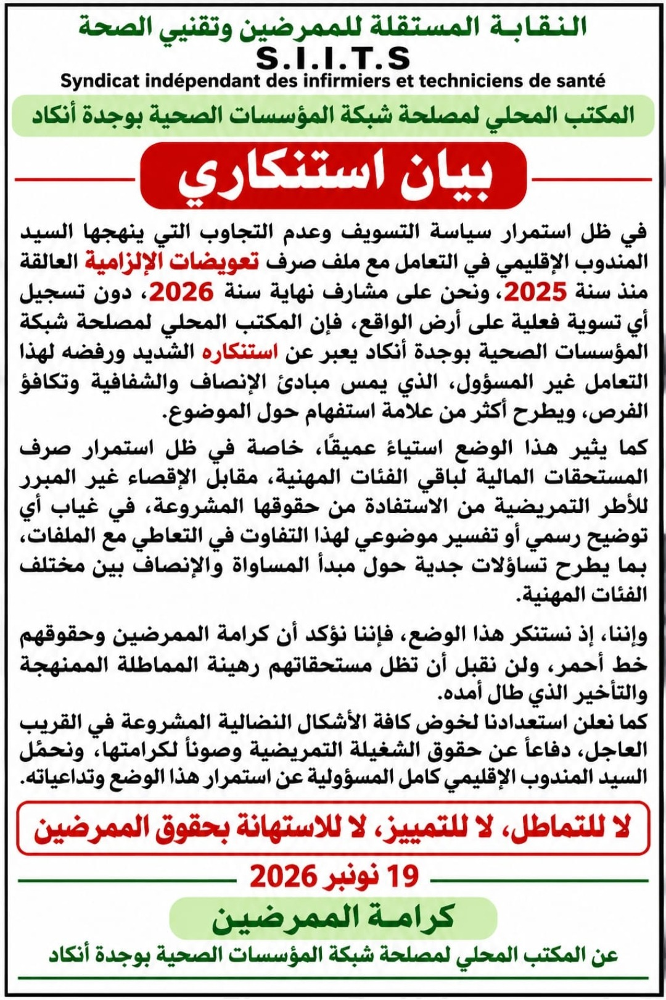

وجدة أنكاد: بيان استنكاري بشأن تعويضات الإلزامية العالقة منذ 2025

في ظل استمرار سياسة التسويف وعدم التجاوب التي ينهجها السيد المندوب الإقليمي في التعامل مع ملف صرف تعويضات الإلزامية العالقة منذ سنة 2025، ونحن على مشارف نهاية سنة 2026، دون تسجيل أي تسوية فعلية على أرض الواقع، فإن المكتب المحلي لمصلحة شبكة المؤسسات الصحية بوجدة أنكاد يعبر عن استنكاره الشديد ورفضه لهذا التعامل غير المسؤول، الذي يمس مبادئ الإنصاف والشفافية وتكافؤ الفرص، ويطرح أكثر من علامة استفهام حول الموضوع.
كما يثير هذا الوضع استياءً عميقاً، خاصة في ظل استمرار صرف المستحقات المالية لباقي الفئات المهنية، مقابل الإقصاء غير المبرر للأطر التمريضية من الاستفادة من حقوقها المشروعة، في غياب أي توضيح رسمي أو تفسير موضوعي لهذا التفاوت في التعاطي مع الملفات، بما يطرح تساؤلات جدية حول مبدأ المساواة والإنصاف بين مختلف الفئات المهنية.
وإننا، إذ نستنكر هذا الوضع، فإننا نؤكد أن كرامة الممرضين وحقوقهم خط أحمر، ولن نقبل أن تظل مستحقاتهم رهينة المماطلة الممنهجة والتأخير الذي طال أمده.
كما نعلن استعدادنا لخوض كافة الأشكال النضالية المشروعة في القريب العاجل، دفاعاً عن حقوق الشغيلة التمريضية وصوناً لكرامتها، ونحمّل السيد المندوب الإقليمي كامل المسؤولية عن استمرار هذا الوضع وتداعياته.
لا للتماطل، لا للتمييز، لا للاستهانة بحقوق الممرضين.
كرامة الممرضين.
فتح في تطبيق النقابة